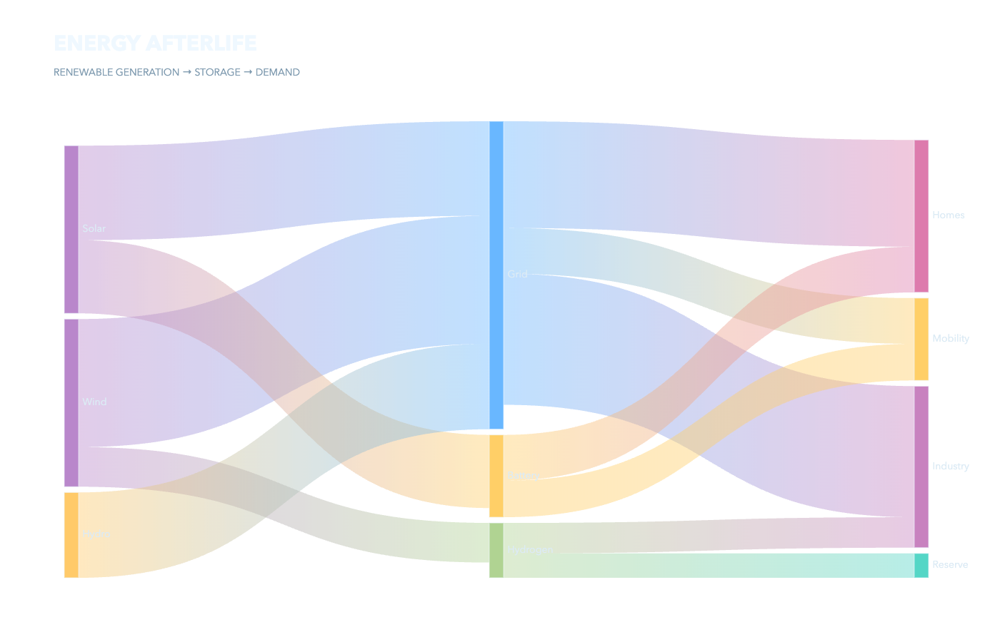

01 · flow
Sankey
Where does renewable energy move and dissipate?
src/main.ts
const sankey:EChartsOption={...base,title:{...base.title,text:'ENERGY AFTERLIFE',subtext:'RENEWABLE GENERATION → STORAGE → DEMAND'},series:[{type:'sankey',left:90,right:100,top:170,bottom:90,nodeAlign:'justify',layoutIterations:48,emphasis:{focus:'adjacency'},label:{color:ink,fontSize:14},itemStyle:{borderColor:'rgba(240,248,255,.65)',borderWidth:1},lineStyle:{color:'gradient',curveness:.54,opacity:.42},data:['Wind','Solar','Hydro','Grid','Battery','Hydrogen','Homes','Mobility','Industry','Reserve'].map(name=>({name})),links:energyLinks.map(([source,target,value])=>({source,target,value}))}]};